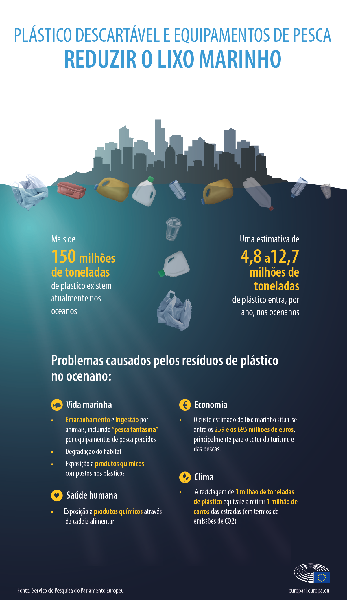

A reciclagem de plástico é o processo de reaproveitamento de resíduos plásticos para criar novos produtos, o que é crucial para a sustentabilidade. Esse processo, que envolve coleta, separação, lavagem e transformação, reduz o descarte na natureza e a demanda por matérias-primas virgens. Existem diferentes tipos de reciclagem, como a mecânica (mais comum) e a química, cada uma com seus próprios processos e benefícios. Importância da reciclagem de plástico Preservação ambiental: Diminui a poluição do solo, da água e do ar, além de reduzir o volume de lixo em aterros sanitários. Economia de recursos: Reduz a necessidade de extração de recursos naturais não renováveis, como petróleo e gás natural, utilizados na produção de plástico novo. Geração de empregos e renda: Movimenta a economia e cria empregos em diversas etapas do processo, desde a coleta até a indústria transformadora. Economia circular: Permite que o material seja reutilizado e reinserido na cadeia produtiva, promovendo a eficiência de recursos e um modelo de negócios mais sustentável.
Reciclar plástico reduz a poluição e o consumo de petróleo.
Exemplos: garrafas PET, tampas e embalagens diversas.
⬅ Voltar